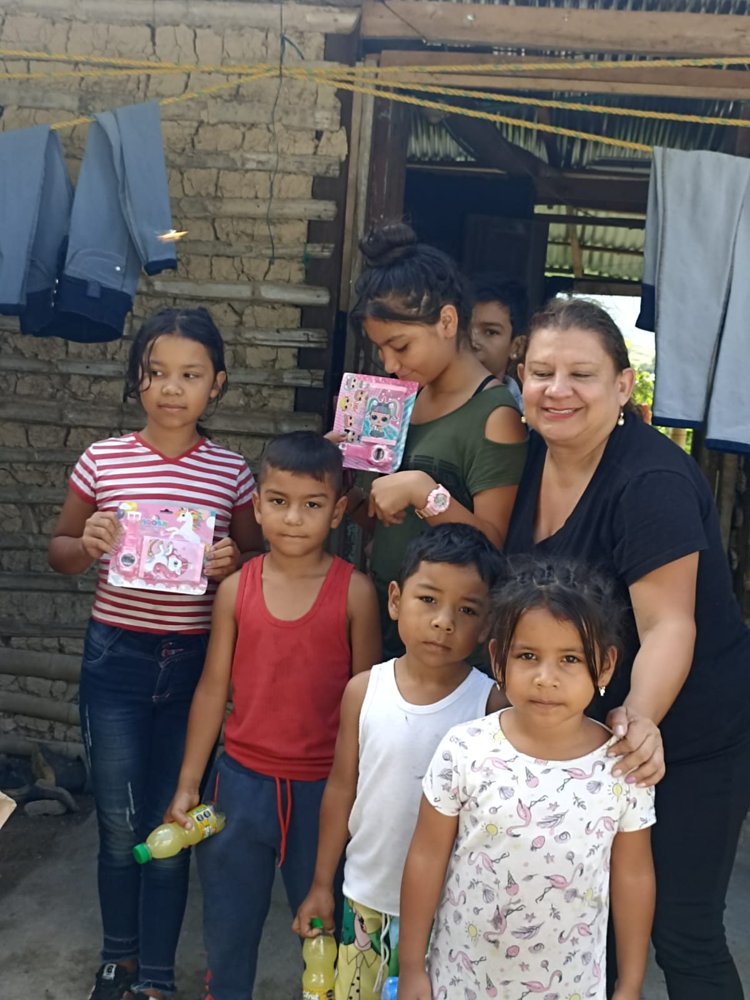
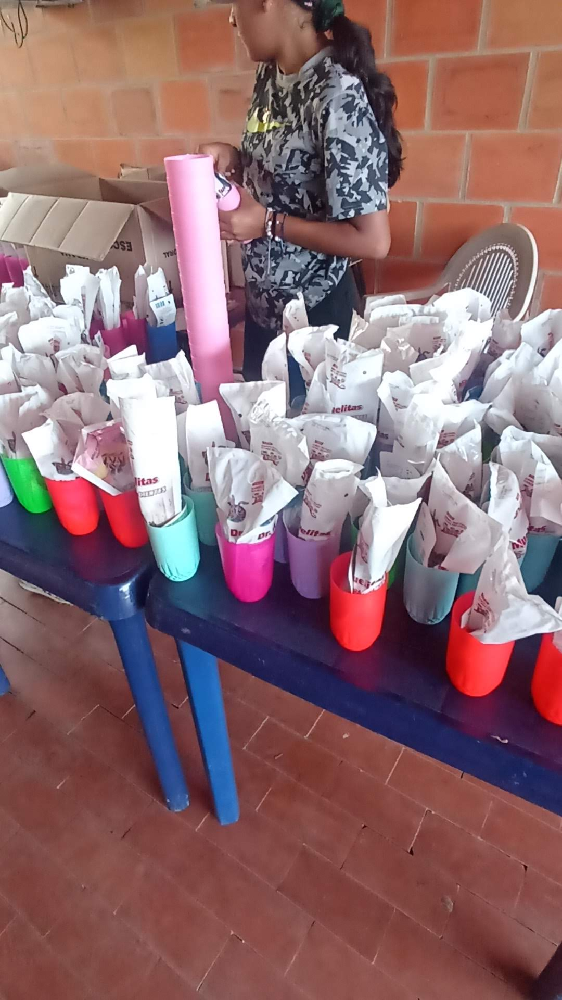
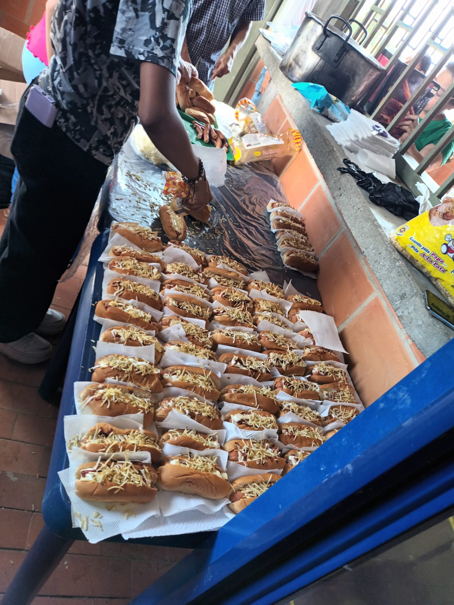
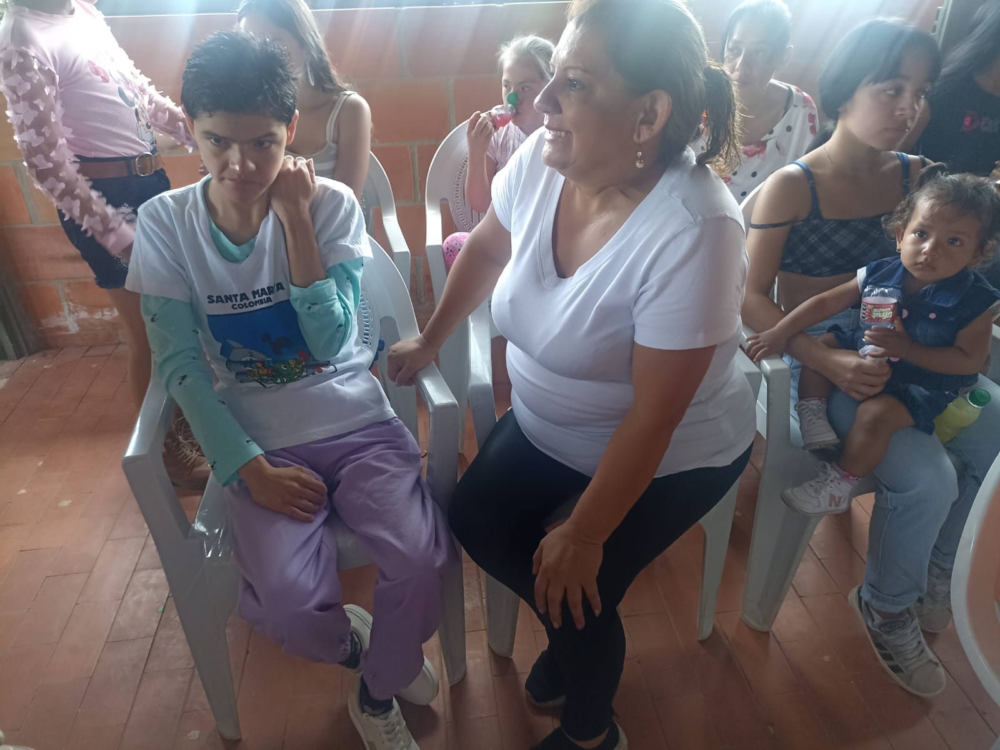
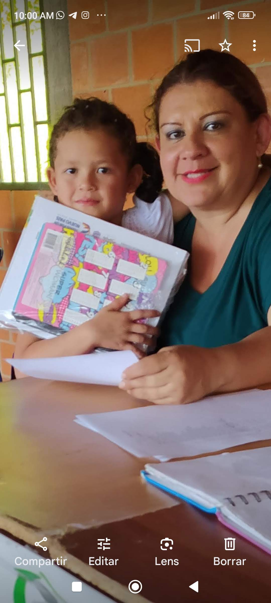

Cada sonrisa, cada avance motriz y cada encuentro con nuestros perros de terapia es posible gracias al trabajo en equipo con las familias.










Desliza horizontalmente para ver cada cápsula de nuestras actividades terapéuticas.